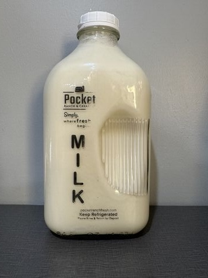
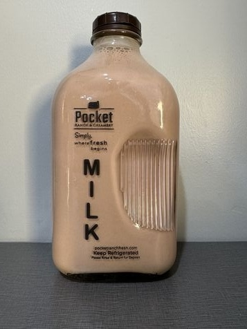
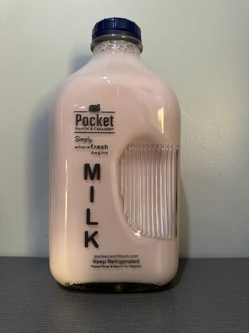
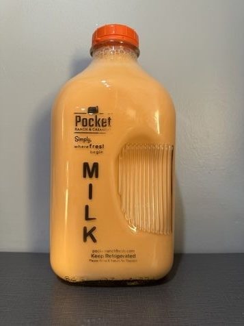
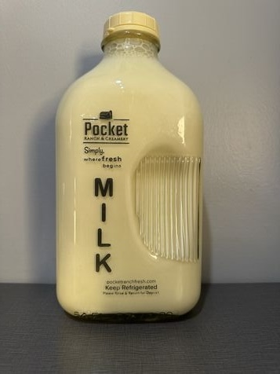

Welcome to the “Cream of the Crop”. Here at Pocket Ranch, we take pride in what we do so you can take pride in what you buy. All our products are produced right here on our farm in Gooding, Idaho. You will find that they are fresh, delicious and healthy. It’s important for our customers to know where their food comes from and we encourage you to visit us back at the ranch. Here at Pocket Ranch is simply where fresh begins. - Your Local Farmer, The Bingham Family

White Milk

Chocolate Milk

Huck Milk

Orange Milk
